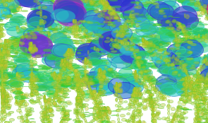

6. Drawing Application¶
This project builds on the previous 2 projects where we implemented code to create a hue color slider and an interactive button. Both of these previous projects emphasize the use of functions to simplify programs. In this section we’ll explore some options for a creative drawing application. As with many drawing programs, when the user drags the mouse, we’ll write a program to create a brush-type of pattern. We’ll use functions to provide structure and organization for our code.
If we imagine ourselves as the brush in a drawing application, we should consider what information we’d have available as input, each time there’s a new frame in the drawing loop. We’ll have access to the global values: mouseX and mouseY and that will determine the location of the shapes drawn in a current time-frame. We also have access to the global values: pmouseX and pmouseY, which represent the location of the mouse in the previous execution time-frame of the draw loop. Using these values together can allow us to create more interactive drawing patterns.
6.1. Mouse Speed¶
In Learning Processing chapter 3, exercise 3.6, Daniel Shiffman uses the mouseX, mouseY and pmouseX, pmouseY variables to draw a line following the mouse movement:
line( pmouseX, pmouseY, mouseX, mouseY);
We can determine the distance that the has mouse moved since the last frame by observing that in the x direction, the mouse has moved the absolute value of (mouseX-pmouseX) and the same can be determined in the y direction. This provides a few interaction parameters that we can use to create a more interactive drawing brush than just drawing a line between successive mouse positions. So, the speed of the mouse would be the distance traveled in a given amount of time. We can use the fact that the time between frame execution is a measure of time, so one measure of speed would be:
float speed = abs(pmouseX-mouseX) + abs(pmouseY -mouseY);
Then we can use that speed value to control some aspect of the elements drawn. In Shiffman’s example, he suggests using speed to vary the value of the strokeWeight, below is one possible expression which could create an interesting drawing brush.:
strokeWeight( 1 + (.05* speed));
6.2. Mouse Distance¶
Processing provides a distance function we can use to determine the distance between points. It takes as input, the x,y positions of 2 points. We can use the pmouse and mouse positions to determine the distance between 2 points, or we can create some global position variables _x, _y and use those to determine distance from the mouse position. This will allow us to control how far the mouse must move between drawing positions. If we were to draw ellipses at the current mouse position, and only want to allow the drawing application to allow drawing another circle if the mouse has moved atleast some minimum distance between each circle before drawing the next circle, these global location values can provide more control than using pmouseX, pmouseY which are updated by the system each frame execution.
float _x; //global variables which are initialized outside of draw
float _y; // _x, _y mark the location of the last drawn element, only updated when an element is drawn.
void setup(){
size(400,400);
_x=width/2;
_y=height/2;
background(255);
}
void draw(){
float distance=dist(_x,_y,mouseX, mouseY);
if((distance > 10) && mousePressed){ //make sure mouse has moved 10 pixels between the start of each new ellipse
ellipse(mouseX,mouseY,20,20);
_x=mouseX; //update value of last draw position
_y=mouseY;
}
}
6.3. Creative Brushes¶
One thing to consider is the range of possible values when using a parameter like speed to create variation in a drawing feature. If no mouse motion occurs, then speed=0. Using println(speed) is a good way to see the range of values for typical mouse motion. Once that’s been determined then it’s easier to find an interesting way to integrate speed into the drawing program. We can use speed to modify values of color, alpha, shape dimensions, scale, rotation angle etc. If we use any transformations in our drawing app, then we’ll want to use pushMatrix(), and popMatrix() to help insure that other drawn elements like our sliders which are drawn at the end of the draw loop, aren’t distorted by any transformation we’d apply for our brush effects. Here’s an example of using speed along with some small random variations to modify a wide range of values, so that just drawing 2 ellipses creates a somewhat interesting brush. One important goal is that we want the drawing brush to somewhat intuitive so that a user can realize, if I draw slower, then I get smaller shapes, this is essential in order for the brush to be useful for creating an interesting artwork:
void setup(){
size(400,400);
background(255);
colorMode(HSB);
}
void draw(){
float speed=abs(mouseX-pmouseX) +abs(mouseY-pmouseY);
if(mousePressed){ //only draw if the mouse is pressed
pushMatrix();
translate(mouseX, mouseY);
fill(40 +(speed*.95), 200+(random(-10,10)),200+(random(-10,10)),100 +(speed*.55)); //use speed to modify fill
stroke(60 +(speed*.95), 200+(random(-10,10)),200+(random(-10,10)),100 +(speed*.55)); //use speed to modify stroke
ellipse(0,0,2+(speed*.25),6-(speed*.25)); //use speed to modify width, height
ellipse(3+random(-5,5),5+random(-5,5),5+(speed*.25),6-(speed*.25)); //use speed to modify width, height
popMatrix();
}
}
Below is a screen-shot from the brush created above where there’s not even a color slider option for the user to modify. These images show that there were predictable behaviors of the brush that allowed the user to create a composition based on understanding the brush behavior, in this case: drawing pattern varied with mouse speed.

6.4. Questions¶
- How can we determine some measure of the mouse speed, given the current mouse positions and the previous mouse positions?